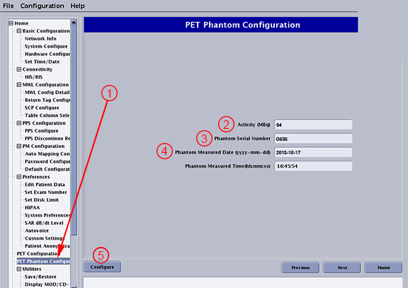
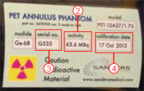

- 00000018WIA3097B230GYZ
- id_156676705.26
- Oct 1, 2025, 8:56:26 PM
Load from Cold (LFC) (MP26)
This procedure details a Load from Cold (LFC) software installation on newly installed SIGNA PET/MR systems, and repaired or upgraded SIGNA PET/MR systems.
Prerequisites
| Personnel requirements | |||
|---|---|---|---|
| Required persons | Preliminary requirements | Procedure | Finalization |
| 1 | 10 minutes | 240 minutes | - |
| Tools and test equipment | |||
|---|---|---|---|
| Item | Quantity | Part number | Manufacturer |
| Service Pack DVD/USB (if required) | 1 | - | - |
| SIGNA PET/MR Software Collector (MP26) | 1 Set | See FRU | - |
| Required conditions |
|---|
| Archive images using site procedures; use Scan Data Manager to save PET raw data. See operator manual for instructions. |
| PET/MR software installation uses the English language. An international keyboard cannot be used until after keyboard and language settings are configured, and the system is rebooted for the first time. |
About this task
If more information is needed for how to load Service Packs, see Installing service packs.
This procedure details a Load from Cold (LFC) software installation on:
- Newly installed SIGNA PET/MR systems
- Systems upgraded from a Discovery MR750w to a SIGNA PET/MR system
- Whenever LFC needs to be done on a PET/MR system after repairs or maintenance
- Upgrading software on a PET/MR system
For existing PET/MR systems
Procedure
Loading Operating System (OS) software
Procedure
Loading MR applications software
Procedure
Loading PET applications software
Procedure
DANGER
In Guided Install, select PET Phantom Configuration (1) and enter the annulus phantom label details on this screen.Notice 
Figure 13. PET Phantom Configuration values 
Figure 14. Annulus phantom label details 
- For Activity (MBq) (2), type the activity value (2) from the label on the Annulus phantom.
- For Phantom Serial Number (3), type the serial no. (3) from the label on the Annulus phantom.
- For Phantom Measured Date (4), type the calibration date (4) from the label on the Annulus phantom.
- Click the Configure button (5) to save the entries.
Loading Volume Reconstruction Engine (VRE) OS software
Procedure
Configuring SPiCE (PARC) software
Procedure
Installing In Room Monitor (IRM) software
Procedure
- In Guided Install, select IRM Installation and click the Install IRM Software button.
- The IRM Software Package is installed on this system message shows when complete.
Loading MR service software
Procedure
Loading optional BrainWave software
Procedure
Loading operator manual
Procedure
- Insert the operator manual disk into the DVD drive.
- In Guided Install, select Service SW/Insite from the left navigation pane, and click the Install Online Help button.
- Select the appropriate language and click Install.
- When installation is complete, click Cancel and remove the DVD from the drive.
Calibrate the LCD monitor
Procedure
- Calibrate the LCD monitor. See LCD Monitor Screen Adjustments.
- Load option keys with elicense.
Do RestoreInfo (only if reloading MP26 and later)
About this task
RestoreInfo takes about 20 minutes, and restores all files if they were saved off the system. Continue as follows if a PET/MR SaveInfo disk exists with existing PET calibrations.
Procedure
System restart
Procedure
- Close the Guided Install screen.
- Right-click on the Linux desktop and select System Restart.
- After reboot, log on as sdc with password adw2.0.
Configuring About MR Scanner
Procedure
Load option keys
Procedure
- To reset options, run swokinstall —r reset.
- Load option keys per Option key catalog matrix.
- Load SSA keys per Service licensing.
Do complete PET calibrations (MP24 to MP26 and later only)
About this task
The following calibrations need to be done for MP24 to MP26 and later upgrade only.
Do complete PET calibrations (MP24 to MP26 and MP26 ME to MP26 M3 only)
Procedure
Do SaveInfo
Procedure
Finalization
Finalization
- Important Make sure that the latest service pack is loaded. Refer to the latest revision of the MR Service Pack Software Matrix (DOC1667089), available from the online documentation library.If more information is needed for how to load service packs, see Installing service packs.
- Reboot the computer and log on as sdc, with password adw2.0.
- Do a check of the cyber security compliance. See Doing a check of the cyber security compliance.
- After installing MP26 and later SP1 and SP2, do the following workaround to enable T1map and synDWI license strings:
- Open a C-Shell as an SDC user.
- At the prompt execute the following command: sok_test | grep -i cardt1map.
If cardt1map is not installed, go to Step 4.5.
- If cardt1map is installed, execute the following command: /export/home/sdc/install/install.t1map.
- Confirm the entry of T1MAP in lock file by running: cat /export/home/sdc/vxtl/lock.
- At the prompt execute the following command: sok_test | grep -i synDWI.
If synDWI is not installed, go to Step 4.7.
- If synDWI is installed, execute the following command: /export/home/sdc/install/install.syndwi.
- Confirm the entry of SYNDW in lock file by running: cat /export/home/sdc/vxtl/lock.
- If this is a first-time software installation and no previous calibration data exists, then run these calibrations:
- MR calibrations found in the SIGNA PET/MR 3.0T System Service Manual DVD (5490579-x) under Adjustments/Calibrations.
- PET calibrations found in the SIGNA PET/MR 3.0T System Service Manual DVD (5490579-x) under .
-
If this is a software reload of a working system, do the following: